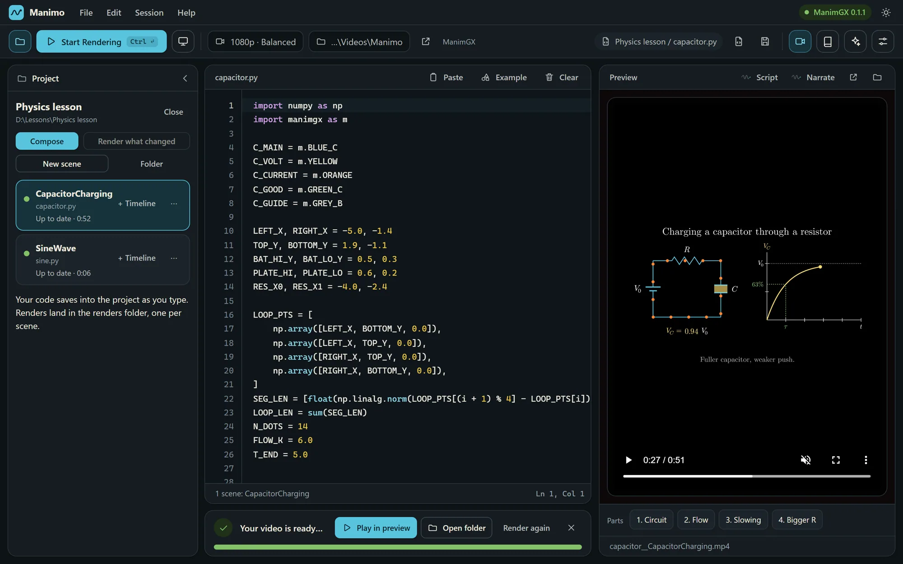
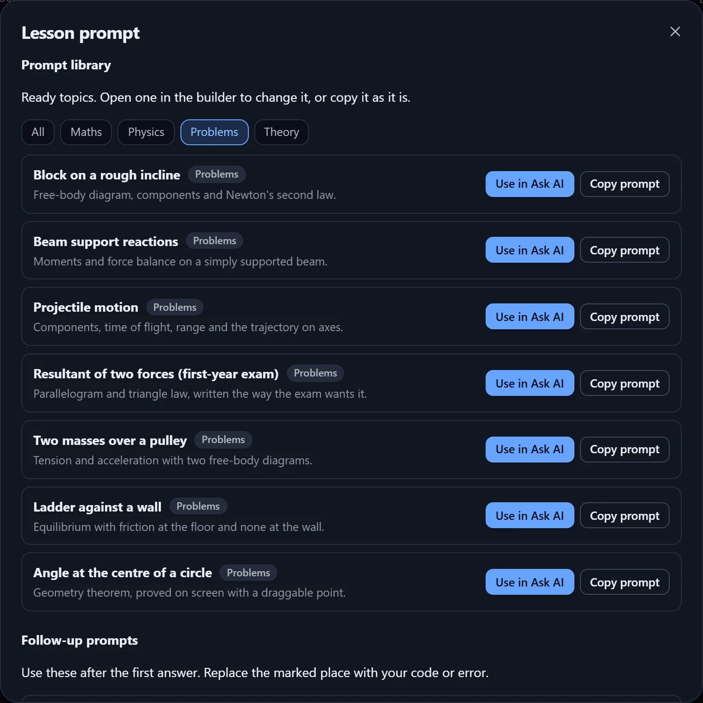
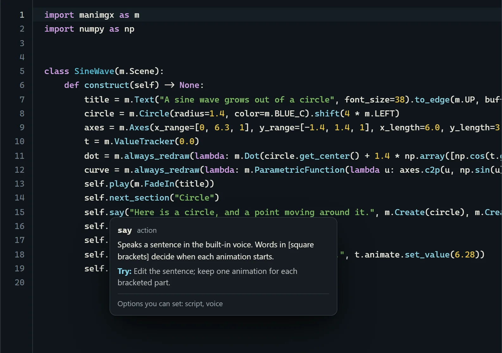
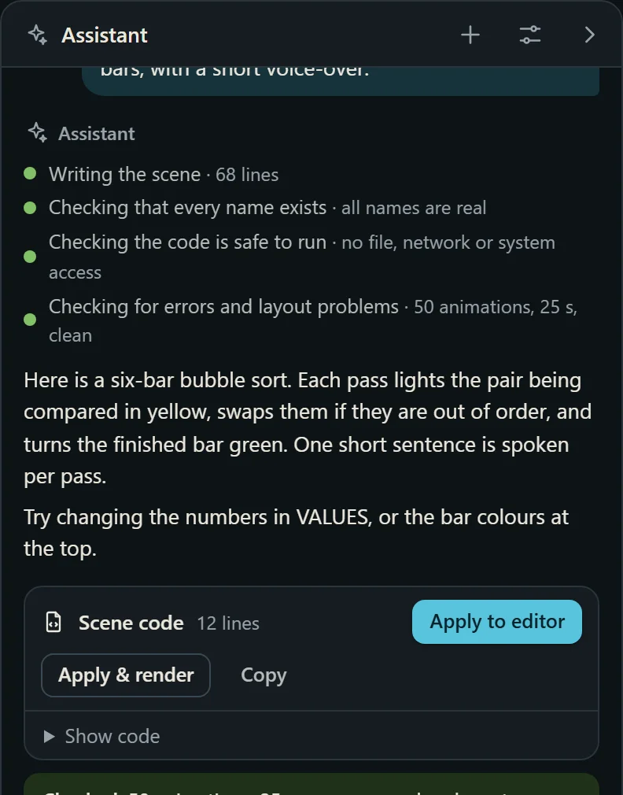
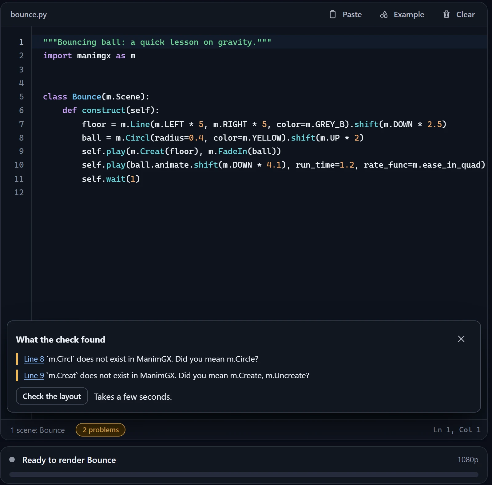
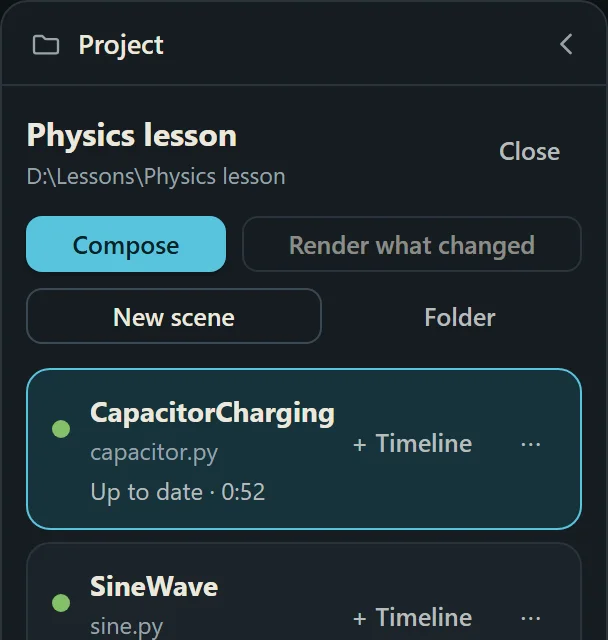
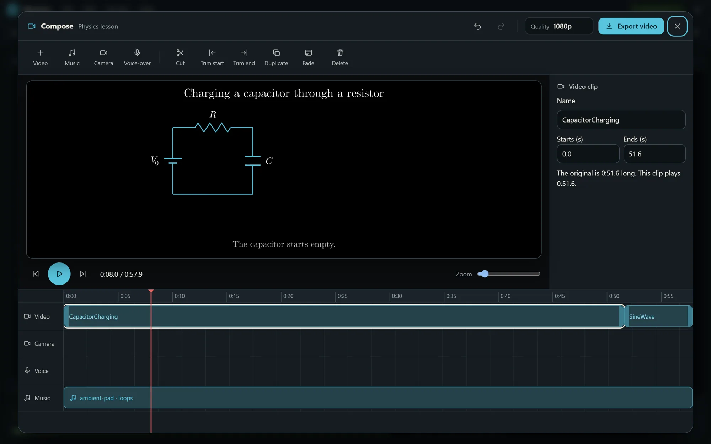
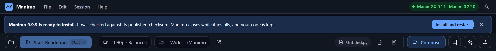

Math,in motion.
Write the animation, render it, give it a voice, and edit your scenes into one finished lesson. Everything runs on your own Windows PC.
335 MB. Windows only for now. Installs for one user, works offline, no account.
A sine wave grows out of a circle. Manimo draws diagrams like this one from a few lines of code.
Charging a capacitor through a resistor. 51 seconds, narrated by the built-in Adam voice.
A real lesson, made in Manimo
This is what comes out: a circuit that fills a capacitor, a graph that grows as the voltage rises, and a voice that explains each step while it happens.
It was written as code, rendered on one laptop, and narrated by a voice that lives inside the app. No upload, no recording studio.
Everything in one window
Code on the left, your video on the right, and every part of the lesson one click away.

A prompt that writes the lesson for you
Give this to any AI model. Fill in the marked places and it returns a complete animation, with the equations built up on screen and a narration script timed to the picture.
[YELLOW] still needs your words. Blue is what you filled in. The rest stays as it is.
Get an even better result
- Paste the equations as LaTeX, in the order they should appear. The model builds them up piece by piece.
- Give the worked example real numbers. "R = 10 kilohm, C = 100 microfarad" beats "some resistor".
- Say what the viewer can do at the end, for example "explain why the curve flattens".
- Say what they already know, so basics are skipped or explained.
- One idea per scene. For a whole lesson, ask for scene 1, 2 and 3 separately, then join them in Compose.
- Show a scene you liked and add "match the pacing and layout of this".
- Inside Manimo, Ask AI also checks every name, runs a test render and fixes overlapping text for you.
When it needs a nudge
Three follow-ups that work with any model. Replace the marked places and send.
Prompt library
Pick a topic and its prompt is ready to copy, with the equations and a worked example already in. More topics in maths and physics are added over time.

Missing a topic? Ask for it by email and it goes on the list.
Know what every line does
Rest the mouse on any word, option or number in the code. A short note says what it is and what to try changing.
- Plain words, not jargon.
def constructis explained as “the recipe of your video”, andx_rangeas the start, end and step of the axis. - Your own names too. Hover a function or variable you wrote and it tells you where it was defined and how often it is used.
- Autocomplete from the engine. Over 500 built-in names, suggested as you type.
- Examples ready to run from the File menu, and layout notes that jump to the line they are about.

say. Options and numbers get notes too, so you know what is safe to change.
Or just describe it
Ask for an animation in your own words. Manimo's assistant writes it, then checks its own work before showing you.
- Every name is verified against the engine, so it does not invent commands that do not exist.
- Unsafe code is blocked. Anything that touches your files, network or system is not run.
- Errors and overlapping text are found by a real test render, and fixed in up to 3 rounds.
- Bring your own assistant. Use one already on your PC such as Claude Code, your own API key, or another model. It is optional; Manimo works fully without it.

Mistakes caught before you render
Paste code from an AI or a friend and Manimo reads it first. If something is wrong it says what and where, in plain words.
- Names that do not exist are found, with a suggestion: “did you mean
m.Circle?” - Missing pieces such as a scene to render, the import line, or the
constructmethod. - Unsafe code is flagged before anything runs.
- Layout check on request. Manimo runs the scene and finds text that overlaps or leaves the picture.
Render on your own PC
Press Start Rendering. The video appears beside your code when it is done.
- 480p drafts to 4K finals, with a fast, balanced or smallest-file option.
- Present mode plays a scene as slides that pause at each section, for live teaching.
- Several scenes in a file? Render one, or all of them in a row.
- Already have Manim code? Add Manim Community Edition from inside the app, once, and it renders too.

Give your lesson a voice
14 voices come inside the app, female and male, American and British. They run on your PC, need no key and no internet, and speak in time with your animation.
Write self.say("Here is a circle, and a point moving around it.") and the words are spoken as the animation plays. Words in square brackets decide when each animation starts.
The built-in voices speak English. For Tamil or any other language, record your own voice over the video.
- .txt
- .srt
- .vtt
- .json
Every narrated line can be exported with its time, for subtitles or review.
Female voices
- NicoleAmerican, soft and calm
- HeartAmerican, warm and natural
- BellaAmerican, bright and expressive
- SarahAmerican, clear and friendly
- SkyAmerican, light and youthful
- EmmaBritish, clear
- IsabellaBritish, warm
Male voices
- AdamAmerican, deep and steady
- EchoAmerican, clear and friendly
- MichaelAmerican, confident and clear
- EricAmerican, even and patient
- LewisBritish, warm
- GeorgeBritish, authoritative
- DanielBritish, calm
Each sample says: “Here is a circle. Watch a sine wave grow out of it.”
Cut it into one lesson
Press Compose. Every video you rendered in the project is already on the timeline, ready to cut, trim and join.

- Cut at the playhead
- Trim the start or the end
- Fade a clip in and out
- Background music that repeats and fades
- Yourself on camera, in any corner
- Record a voice-over while it plays
- Undo and redo
- Export 1080p, 720p, 480p or audio only
It tells you when there is a new version
Manimo looks for a newer release on GitHub when it starts, downloads it quietly in the background, and checks it against its published checksum.

- You choose when to install. Nothing is installed until you press the button, and your code is kept.
- Nothing about you is sent. Only the version number is read. Both switches are in Settings if you prefer to update by hand.
Updating starts from version 1.9.6. Earlier versions need one manual install first.
Why it earns its place
Making a lesson video usually means stitching several tools together. Manimo puts the whole chain in one app.
Without it
- Install Python, then an animation library, then a video tool, then a speech service.
- Learn to code before you see your first frame.
- Render in a terminal, then open the files in a separate video editor.
- Record narration somewhere else and line it up by hand.
With Manimo
- One installer that works offline. Nothing to set up first.
- Start from an example, hover to understand every line, or describe the animation and let the assistant write it.
- Preview, render, narrate, edit and export in one window.
- The voice is timed to the animation from the start, and chapters and subtitles are written for you.
Teachers
Turn the diagram you always redraw on the board into an animation you can play, pause and reuse every year.
Students
Explain a concept for an assignment or a viva with moving pictures and your own voice, not a screenshot.
Creators
Build a series in one project, re-render only what you changed, and export with chapters and subtitles.
Questions teachers ask
Is Manimo free?
Yes. The download is free.
Do I need to know Python?
No. The installer brings what it needs. You can start from examples, hover over any line to understand it, or describe the animation and let the assistant write it. A little code helps when you want to change things yourself, and the hover notes are there to teach you.
Does it need the internet?
Not to install, render, narrate or edit. You only need a connection if you add Manim Community Edition from inside the app, or use a cloud AI service for the assistant.
Which languages can the voices speak?
The four built-in voices speak English. For Tamil or any other language, record your own voice with Narrate, or with the voice-over button in Compose.
Is my code sent anywhere?
Only when you use the AI assistant, and only to the service you chose. Rendering, narration and editing stay on your computer.
Windows says “unknown publisher”. Is that normal?
For now, yes. The installer is not signed with a commercial certificate yet, so Windows shows a warning. If you downloaded it from this page, choose More info, then Run anyway.
Does it work on Mac or Linux?
Not yet. Manimo is for Windows.
What is ManimGX?
The animation engine inside Manimo, made by the Academa team. It reads Manim-style Python and renders on your graphics card. Manimo adds the editor, assistant, voices and video editor around it.
Write to me
A bug, an idea, a lesson you would like to make, or a question about the app. A short email is enough.
If you report a problem, say which version of Manimo you have and what you pressed just before it happened.
Make your next lesson move.
Free for Windows. 335 MB. Works offline.
Download for Windows, freeVersion 1.9.7. SHA-256 B5C5A7611DD439D038C284A85C3251BE8ED1A03E151D0923A364DAC9424D3110